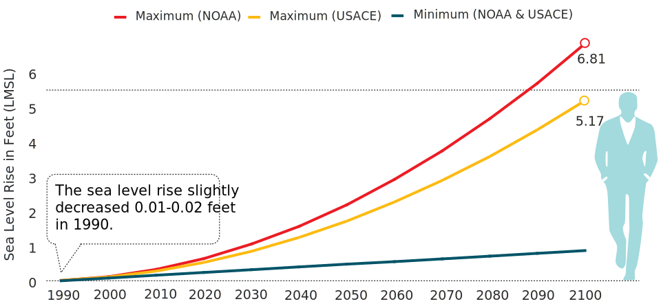
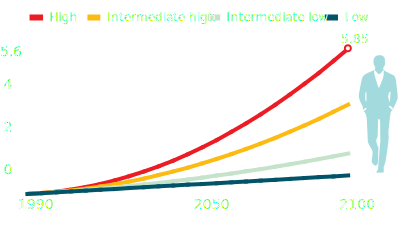

City Up High
Southeast Florida is considered one of the most vulnerable areas to climate change and sea level rise. Since 1870, average global sea level has risen by about 8 inches, while the Southeast Florida has risen 12 inches.1 In the City of Miami Beach, sea level rise has made prolonged flooding a frequent event after strong storms.
Mean Sea Level Rise Trend in Miami Beach2
In less than 100 years, it is possible that sea level rise exceeds a average human being's height.
 NOAA: National Oceanic and Atmospheric Administration. USACE: United States Army Corps of Engineers. NAVD88: North American Vertical Datum of 1988.It represents height of the primary tidal bench mark.
Salt Water Intrusion
Even though the dominant cause of saltwater intrusion is well-field withdrawals, the rising sea in South Florida exacerbates the extent of saltwater intrusion.3 Salt water spreads from both the south and east coast lines under the mainland of South Florida where its limestone plateau allows its intrusion into the Biscayne Aquifer because of its porous, vulnerable structure. Excessive pumping of fresh water from the aquifer and unprotected canals allow the saltwater to seep into the fresh water supply, which then requires desalination by water providers.
City Under Water?
The City of Miami Beach is facing challenges from the rising sea level due its relative flat terrain and porous limestone geologic feature, as are other areas in South Florida. Occasional heavy rains lead to flooding and some areas even flood during high tides. There are two high tide periods: from March to May, are the spring high tides; and from October to December, the fall high tides. The annual King Tide, year's highest astronomical tide, occurs annually in October. Residents experience commuting delays and business and home owners suffer property damage. The city also loses vegetation when the salt water intrudes into root zones, which prevents the ecosystem from protecting the local environment.
A $550 Million Temporary Solution?
The City of Miami Beach is one of the communities in the Southeast Florida Regional Climate Change Compact that serves to assess the need of different areas and plan actions to combat climate change. The city is collaborating with other communities, Broward, Miami-Dade, Monroe and Palm Beach Counties to develop a series of adaptation plans to control the existing flooding situation, as well as to prevent future effects from climate change.
Since the new mayor, commissioners and city engineer were elected a year and a half ago, the City of Miami Beach has adopted a project focused on returning storm water to the ocean by installing a pump-based drainage system and Tideflex valves which prevent saltwater from entering the pipes. To make the most use of the existing infrastructure, the city also has been building pipes to connect existing isolated pumps. The city is also working on raising streets and sidewalks in low areas to higher elevations and resetting the building standards to accommodate rising ground water. While focusing on the implementing proven approaches, the City of Miami Beach prepares best for the potential future effects from sea level rise by raising existing sea walls and planting vegetation to build “living sea walls”.
The City Engineer, Bruce Mowry says, “This year, we have $100 million budget for the project, and I plan to ask for another $150 million next year. It probably will cost $300 million more to complete the program.”
Before the new project started, there were some isolated pumps which pumped flood water back to the underground aquifer. However, as the sea level rises causing more frequent flooding of streets, the isolated pumps couldn't keep the streets dry. The new plan is to install more underground pipes to connect all the isolated pumps and pump the flood water back to the ocean on the west side of the island.
When the ocean rises, the existing one-way valves which allow water to be discharged to sea while keeping saltwater flow back couldn't open. To increase the water pressure, the city has been installing pump stationsalong the west coast where frequent flooding occurs.
The next step is to raise the streets , and to change the building code to make sure that future properties will be built at a higher elevation to avoid flooding.
The existing sea walls are not high enough to prevent rising saltwater from flooding the streets near Indian Creek during high tides. The city decided to raise the existing sea walls, and incorporate vegetation to build living sea walls.
How does the pump station works with pollution control